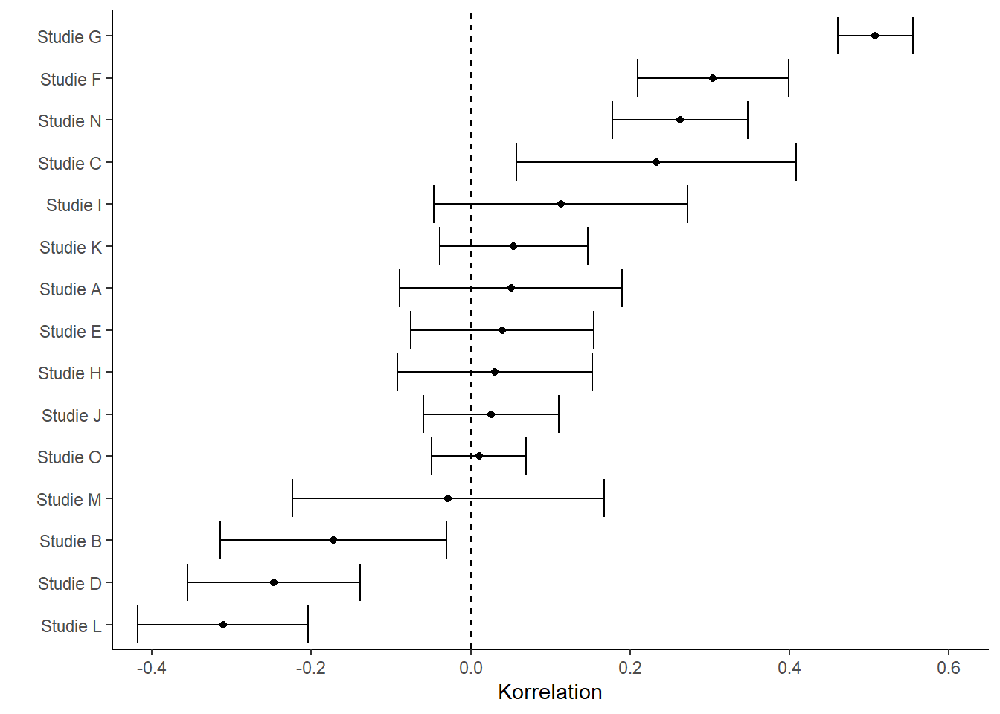
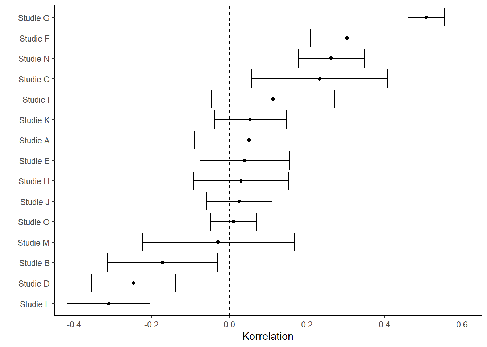

Warning: Paket 'ggplot2' wurde unter R Version 4.5.1 erstelltWarning: Paket 'metafor' wurde unter R Version 4.5.1 erstelltWarning: Paket 'metadat' wurde unter R Version 4.5.1 erstellt
Eine ähnliche Vertrauenskrise gab es in der Sozialpsychologie in den 1960er-Jahren (Lakens 2023). Ein entscheidender Unterschied zwischen der alten Krise und der aktuellen ist Bestandsaufnahme: Parallel zu den eigenartigen Befunden zur Zukunftsvorhersage von Bem vernetzten sich Psycholog*innen um Brian Nosek international und untersuchten die Replizierbarkeit von 100 Studien aus namhaften psychologischen Fachzeitschriften (Open Science Collaboration 2015). Sie fanden heraus, dass sich nur 39 der 100 Originalbefunde replizieren ließen. Bei allen anderen Studien waren die Replikationsergebnisse anders als die ursprünglichen Ergebnisse. Viele weitere Großprojekte folgten, alle mit ähnlichen Ergebnissen: Die Replikationsraten lagen weit unter den gewünschten.
Obgleich dieses „Reproducibility Project Psychology” die gesamte Fachgemeinschaft zutiefst erschütterte und den Weg für einen Paradigmenwechsel ebnete, bemängeln manche Forschende auch negative Auswirkungen auf nachfolgende Replikationsforschung. Indem 100 Studien gleichzeitig von einer Gruppe aus über 100 Forschenden veröffentlicht wurden, setzte das Projekt unrealistische Maßstäbe für Replikationsforschung. Gleichzeitig war die Qualitätskontrolle dabei weniger streng, da die einzelnen Studien nicht alle in dem Maße begutachtet werden konnten, wie es bei einer traditionellen Veröffentlichung der Fall gewesen wäre (z.B. Röseler u. a. (2022)). Einige gleichermaßen ambitionierte Vorhaben wurden veröffentlicht, wie zum Beispiel die ManyLabs Studien (z.B. Klein u. a. (2014); Klein u. a. (2018)), oder Versuche, bei denen unabhängige Gruppen dieselben Hypothesen testeten und replizierten (Landy u. a. 2020). Oft beschränken sich diese Vorhaben auf Studien, die sich im Rahmen einer Online-Befragung replizieren lassen. Formate wie Längsschnittstudien oder Verhaltensbeobachtungen sind dabei aufgrund der schwierigeren Machbrakeit unterrepräsentiert.
Zahlreiche Verbünde folgten. Einige Projekte konzentrierten sich auf einzelne Phänomene. Beispielsweise haben sich 17 Forschungsgruppen zusammengetan, um den Befund des Facial Feedback (Strack, Martin, und Stepper 1988) zu replizieren (Wagenmakers u. a. 2016). Bei diesem Experiment geht darum, dass Personen einen Stift mit den Zähnen festhalten und dabei je nach Ausrichtung des Stiftes entweder diejenigen Muskeln anspannen, die sie auch zum Lachen benötigen oder eben nicht. In der “Lachen”-Bedingung fanden die Versuchspersonen im Anschluss Comics witziger. Die Replikation schlug fehl. 2022 wurde eine weitere Studie mit über 3000 Versuchspersonen aus 19 Ländern veröffentlicht - diesmal auch mit direkter Beteiligung von Fritz Strack, der die Originalstudie durchgeführt hatte (Coles u. a. 2022). Wieder zeigte sich, dass die Position eines Stiftes im Mund sich nicht auf die Bewertung von Stimuli auswirkt. Jenseits von sozialpsychologischen Befunden konzentrierten sich Forschende auch auf Bereiche wie Forschung mit Babys (Byers-Heinlein u. a. 2020) oder auf Studien bestimmter Zeitschriften (Camerer u. a. 2018).
Liste großer Replikationsprojekte (siehe auch FORRT Replication Hub)
| Projekt | Thema | Link |
| Reproducibility Project: Psychology | Psychologie | https://osf.io/ezcuj/ |
| CORE | Entscheidungsforschung | https://osf.io/5z4a8/ |
| Data Replicada | Konsumentenverhalten und Entscheidungsforschung | https://datacolada.org/archives/category/replication |
| Many Labs 1 | Psychologie | https://osf.io/wx7ck/ |
| Many Labs 2 | Psychologie | https://osf.io/8cd4r/ |
| Many Labs 3 | Psychologie | https://osf.io/ct89g/ |
| Many Labs 4 | Psychologie | https://osf.io/8ccnw/ |
| Many Labs 5 | Psychologie | https://osf.io/7a6rd/ |
| Soto | Persönlichkeitspsychologie | https://doi.org/10.1177/0956797619831612 |
| Social Sciences Replication Project | Verhaltensforschung | http://www.socialsciencesreplicationproject.com |
| Registered Replication Reports | Verschiedene | – |
| Many Babies 1 | Entwicklungspsychologie | https://manybabies.org |
| Sports Sciences Replications | Sportwissenschaften | https://ssreplicationcentre.com |
| Hagen Cumulative Science Project | Psychologie | https://osf.io/d7za8/ |
| I4R Replications | Politikwissenschaften | https://i4replication.org/reports.html |
| Experimental Philosophy | Experimentelle Philosophie | https://doi.org/10.1007/s13164-018-0400-9 |
| Reproducibility Project: Cancer | Krebsforschung (Medizin) | https://www.cos.io/rpcb |
| SCORE | Sozialwissenschaften | https://www.cos.io/score |
| REPEAT | Gesundheitssystem | https://www.repeatinitiative.org |
| CREP | Psychologie | https://www.crep-psych.org |
| Boyce et al., 2023 | Psychologie | https://doi.org/10.1098/rsos.231240 |
| ReproSci | Biologie | https://reprosci.epfl.ch |
| Boyce et al. 2024 | Psychologie | https://doi.org/10.31234/osf.io/an3yb |
Zu sagen, was repliziert werden konnte und was nicht, ist erst nach einer Definition von Replikationserfolg möglich. Im Sprachgebrauch von Forschenden wird mit „wurde repliziert” gemeint, dass ein eine Studie, die dieselbe Forschungsfrage untersucht hat, zu gleichen Ergebnissen wie eine Originalstudie gekommen ist. Zu Replikationsfehlschlägen wird „konnte nicht repliziert werden” gesagt. Subtil davon abweichend kann „wurde nicht repliziert” meinen, dass keine Replikationsversuche existieren oder sie gar nicht erst durchgeführt werden konnten, weil die Originalstudie zentrale Punkte nicht ausreichend beschrieben haben (Errington u. a. 2021). Für eine Wissenschaft, die über 100 Jahre alt ist, scheint es überraschend, dass noch immer keine klare Definition wichtiger Konzepte rund um das Thema Replikation vorliegt, geschweige denn es zur Routine gehört, Studien zu replizieren. Während sich in verschiedenen Feldern abweichende Taxonomien, also Modelle zur Einordnung verschiedener Arten von Replikationen, durchgesetzt haben, werden Begriffe rund um Replikation in diesem Buch wie in der Tabelle beschrieben verwendet. Je nachdem, ob dieselben oder andere Daten und dieselben oder andere Analysen verwendet werden ergibt sich, ob von Reproduzierbarkeit, Replizierbarkeit, Robustheit, oder Verallgemeinerbarkeit die Rede ist.
| Daten | |||
|---|---|---|---|
| gleich | unterschiedlich | ||
| Analyse | gleich | reproduzierbar | replizierbar |
| unterschiedlich | robust | verallgemeinerbar |
Jede Messung hat eine Unschärfe. In Sozialwissenschaften sind Messungen von Eigenschaften oder Phänomenen wie Entscheidungsheuristiken extrem schwierig. Werden dann Original-Ergebnisse mit Replikations-Ergebnissen verglichen, haftet beiden Ergebnissen eine Unschärfe an. Das macht es schwierig zu sagen, ob Unterschiede aufgrund von Zufallsschwankungen oder aufgrund von Problemen der Originalstudie entstanden sind. Statistische Methoden, um die beiden Ergebnisse zu vergleichen gibt es zahlreiche. Sie unterscheiden sich typischerweise darin, wie sehr die Unschärfe der Originalstudie berücksichtigt wird. Aufgrund älterer Methodenstandards sind Original-Ergebnisse meistens extrem unscharf und je stärker sie gewichtet werden, desto positiver fällt der Vergleich aus bzw. desto höher ist die geschätzte Replikationsrate. Je nach Methode können Replikationsraten dann zwischen 40% und 80% liegen. Ein Vergleich von Kriterien mit der FORRT Replikationendatenbank ist online verfügbar.
Für eine systematischere, in den Informationswissenschaften verankerte Taxonomie zur Art der Replikation siehe Plesser (2018). Eine an den statistischen Methoden angelehnte Taxonomie für die Ergebnisse von Replikationsstudien haben LeBel et al. (LeBel u. a. 2019) vorgeschlagen. Philosophisch diskutiert wird Replikationsnähe zum Beispiel von Choi (2023) und Leonelli (2023).
| Unterscheidungskriterium | Ausprägungen |
|---|---|
| Ergebnisse einer Replikationsstudie | Erfolgreich Fehlgeschlagen Unklar oder gemischt |
| Nähe einer Replikationsstudie zur Originalstudie (in Anlehnung an Lebel REF und Hüffmeier et al REF) | Direkte Replikation Nahe Replikation Konzeptuelle oder konstruktive Replikation |
| Ziel der Replikation | Reproduktion Replikation |
Ob an einem wissenschaftlichen Befund „etwas dran ist”, er also einen Wahrheitsanspruch hat, hängt – neben seiner eigentlichen Art der Etablierung – bei der Replikationsforschung von vielen Faktoren ab. Was waren die Ergebnisse der Replikationsstudie? Wie viele und wie unterschiedliche Studien wurden durchgeführt? Wie sahen die genauen Methoden aus? Was waren die Unterschiede zwischen Replikationen und Originalstudie? Während Einzelstudien immer einen Erkenntnisgewinn liefern (mindestens, ob eine bestimmte Methode praktikabel ist, (Sikorski und Andreoletti 2023), können sie je nach Forschungsgebiet stark variieren Landy u. a. (2020). Für das Gesamtbild braucht es mehr, wie zum Beispiel eine statistische Zusammenfassung vieler einzelner Studien zu einer Gesamtstudie (Meta-Analyse). Ein Beispiel mit Fantasiedaten befindet sich dazu in der folgenden Abbildung.
Betrachtet man viele Studien, die den Zusammenhang zweier Dinge, wie zum Beispiel Einkommen und Bildungsabschluss, untersucht haben, so werden sich die Studien hinsichtlich der Details unterscheiden: Was wurde alles zum Einkommen gezählt (Netto, Brutto, Sozialleistungen, Einkommen von Familienangehörigen, Werte über einen Zeitraum oder von einem bestimmten Zeitpunkt aus der Vergangenheit, usw.) oder auch welche Personen befragt wurden (Studierende, Berufstätige, wurden Befragte bezahlt, usw.). All diese Unterschiede wirken sich möglicherweise auf den Zusammenhang aus, und selbst wenn sie es nicht tun, unterliegen Zusammenhänge oft Schwankungen, die sich durch die Messmethoden ergeben. In dem Beispiel lässt sich die Stärke des Zusammenhangs auf eine Zahl und eine dazugehörige Präzision herunterbrechen. Die Zahl heißt hier “Korrelation” und die Schärfe “Fehlerbalken”. In dem Wald-Diagramm (Forest Plot / Blobbogram) sind mögliche Korrelationen aus verschiedenen Studien abgebildet. Im Rahmen einer Meta-Analyse können Studienergebnisse anschließend kombiniert und Unterschiede untersucht werden.
Warning: Paket 'ggplot2' wurde unter R Version 4.5.1 erstelltWarning: Paket 'metafor' wurde unter R Version 4.5.1 erstelltWarning: Paket 'metadat' wurde unter R Version 4.5.1 erstellt
Im Gegensatz zu dem breit gefächerten Reproducibility Project Psychology (Open Science Collaboration 2015) und anderen Versuchen, die Replikationsrate für ganze Felder zu schätzen (Camerer u. a. 2016; Feldman 2021; Brodeur, Mikola, und Cook 2024), haben sich andere Versuche auf grundlegende Phänomene fokussiert. Dutzende Gruppen auf der ganzen Welt haben sich in solchen Fällen zusammengeschlossen, auf einen Versuchsaufbau geeinigt, und führen die Studien mit einer enormen Anzahl an Versuchspersonen durch. Die meisten dieser Vorhaben stammen aus der Psychologie. Während die dabei gefundenen Effektstärken, also sozusagen die Deutlichkeit eines Zusammenhanges oder Befundes, in fast allen Fällen weit unter denen bisheriger Studien lagen (Kvarven, Strømland, und Johannesson 2020), waren sie zudem beim Großteil der Studien null, die Phänomene waren also „nicht sichtbar” (Alogna u. a. 2014; Eerland u. a. 2016; Bouwmeester u. a. 2017; O’Donnell u. a. 2018; Wagenmakers u. a. 2016.; Cheung u. a. 2016; Vaidis u. a. 2024; Rife u. a. 2024). So konnte beispielsweise mit einer enormen Präzision gezeigt werden, dass eine Geschichte über einen Professor Versuchspersonen in einem anschließenden Leistungstest nicht schlauer macht (O’Donnell u. a. 2018).
Wie geht man mit Ressourcen bei Replikationen um? Bei Zusammenschlüssen vieler Forschenden stellt sich diese Frage unweigerlich. Erstellen alle Gruppen unabhängig voneinander die Studie? Halten sich alle an ein zuvor abgestimmtes Protokoll? Führen sie die Studie nacheinander durch, um voneinander zu lernen? Bei Registered Replication Reports wird für gewöhnlich zuvor mit anderen Forschenden (z.B. den Autor*innen der Originalstudie) ein Versuchsaufbau abgestimmt. In anderen Fällen wird gemeinsam ein Versuchsaufbau erarbeitet, der zum Testen der Theorie ideal sein sollte (Creative Destruction Approach, Tierney u. a. 2020). Teams in verschiedenen Ländern übersetzen das Protokoll dann und halten sich bei der Durchführung eng daran. Diese Protokolle sind manchmal nicht im Vorhinein getestet (Buttliere 2024), basieren oft aber auf erfolgreichen, namhaften Studien. Das hat den Vorteil, dass Unterschiede zwischen den Gruppen nicht auf Unterschiede in der Durchführung zurückzuführen sind und sich Kulturen vergleichen lassen (Kakinohana, Pilati, und Klein 2022). Ein Nachteil dabei ist jedoch, dass, wenn an einem, zwei, oder fünf Standorten das Experiment schon nicht funktioniert, es fraglich ist, ob die übrigen 30 Gruppen es auch probieren sollten. In den Worten von Buttliere (2024): “Wer bekommt bessere Ergebnisse? 39 Personen, die etwas zum ersten Mal tun, oder eine Person, die etwas 39 Mal tut?”
Ungefähr die Hälfte aller psychologischen Befunde ist also nicht replizierbar. Heißt das, alle sozialwissenschaftlichen Lehrbücher aus allen Disziplinen sind zur Hälfte falsch? Die klare Antwort heißt nein. Die akkurate Antwort lautet kommt darauf an.
Inwiefern es auf die Disziplin innerhalb der Sozialwissenschaften ankommt, wurde bisher vor allem in der Psychologie untersucht. Aktuelle Tendenzen weisen darauf hin, dass Replikationsraten in der Persönlichkeitspsychologie und kognitiven Psychologie (Soto 2019) höher liegen als die in der Sozialpsychologie (Open Science Collaboration 2015) oder im Marketing (Charlton 2022). Während schon hunderte Replikationsversuche für sozialpsychologische Studien veröffentlicht sind, sind es in anderen Bereichen wie dem Marketing aktuell weniger – Stand Oktober 2022 sogar nur neun. Bereiche außerhalb der Psychologie sind von Replikations-Problemen ebenfalls betroffen. Von Problemen der Replizierbarkeit, Reproduzierbarkeit, und Nachvollziehbarkeit sind fast alle Disziplinen betroffen. Neue Lösungsansätze werden in Medizin, Biologie, Chemie, Physik, Geschichtswissenschaften, Politikwissenschaften, Erziehungswissenschaften, Informatik, und vielen weiteren Bereichen diskutiert.